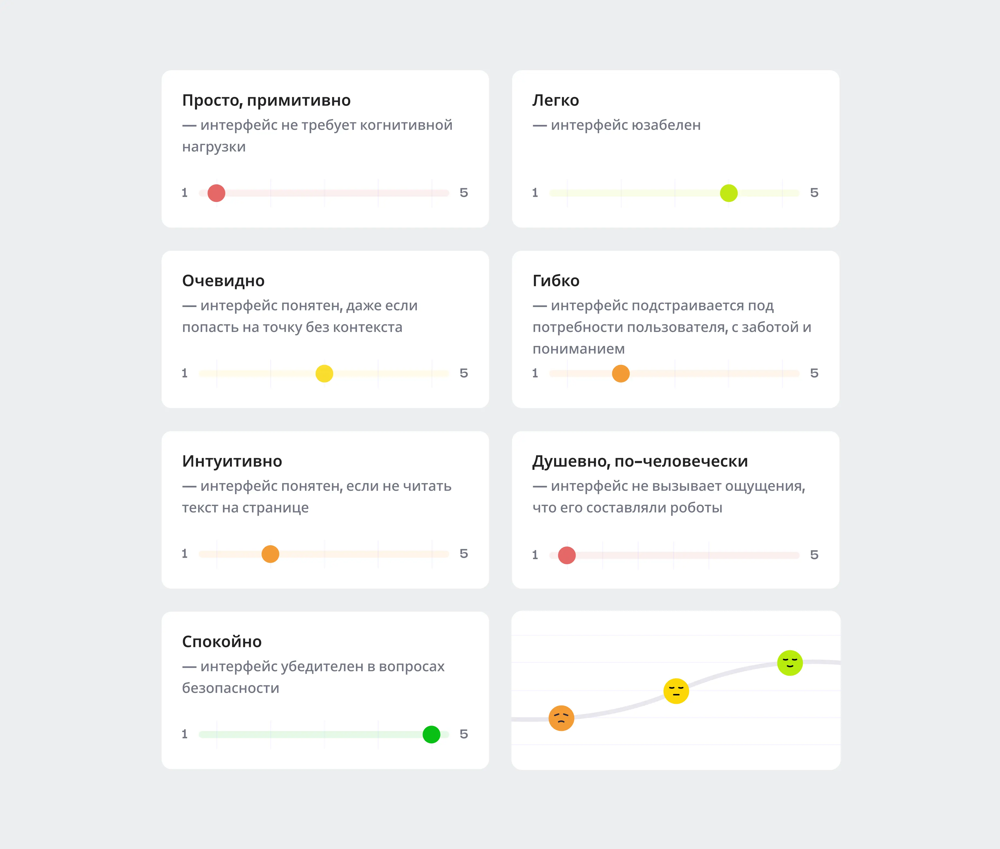
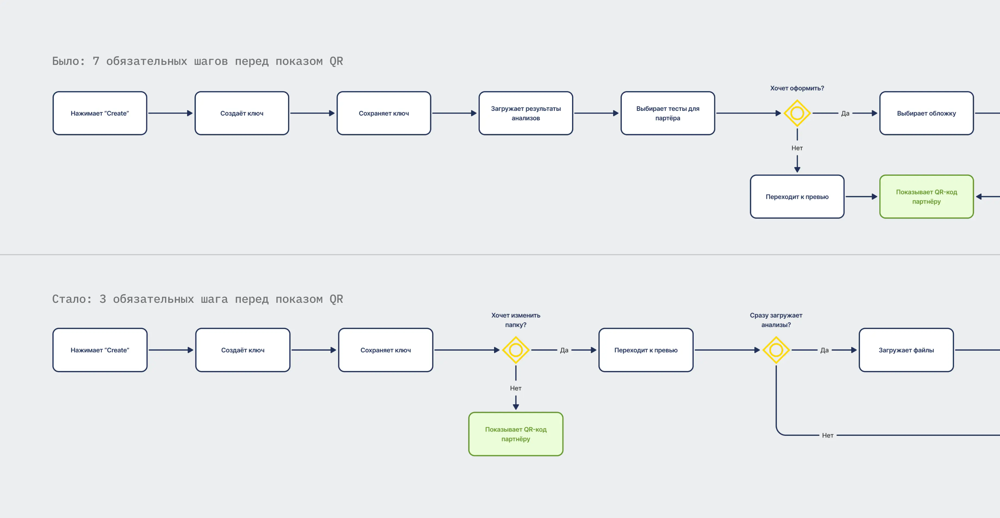
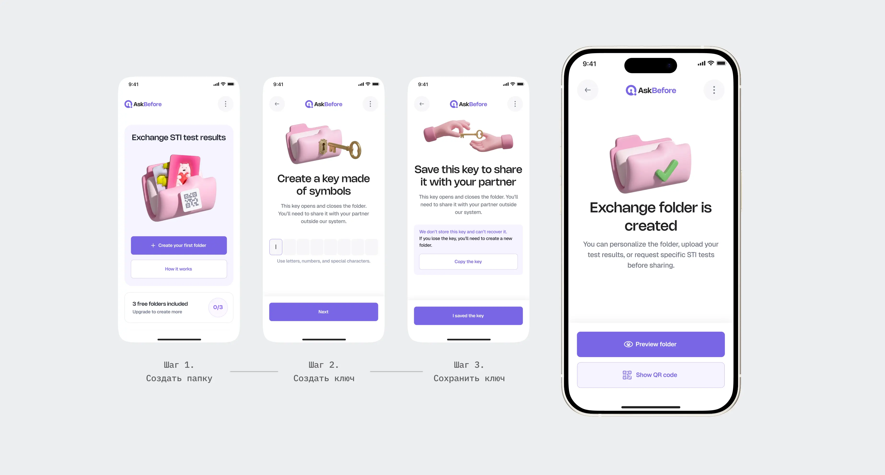
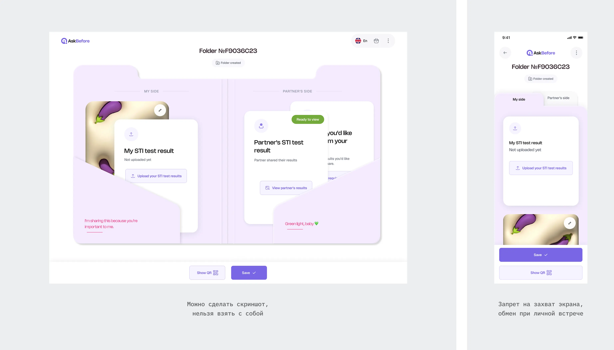
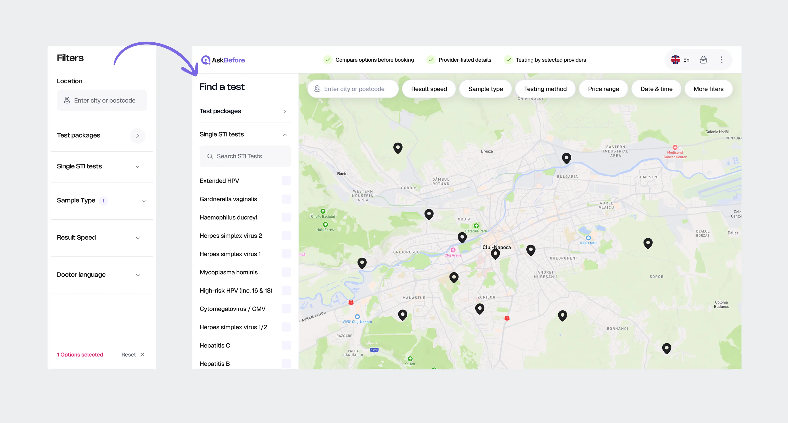
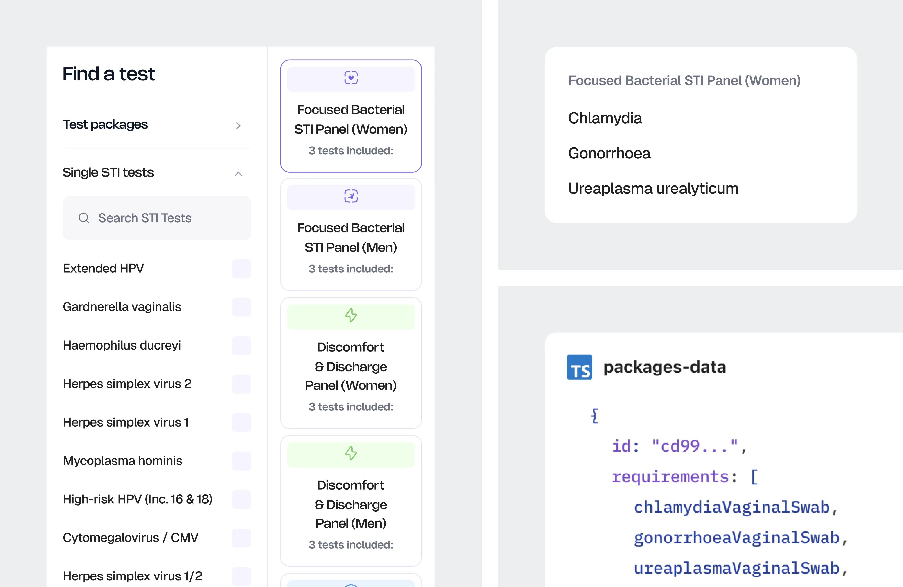

01
Агрегатор — где сдать
карта партнёров, тесты, цены, время, бронирование
Обмен результатами — продукт, которого у людей раньше не было. Сравнить не с чем: нет привычной сущности, нет знакомого паттерна. На тестировании человек открывал экран и не понимал, где он находится и что от него хотят.
Обмен я сделала понятнее и короче, агрегатор — предсказуемее в выборе, а сам сценарий обмена увела с носителя, на котором он ломался.
На пользователя работают два продукта, и друг о друге они не знают. Можно год пользоваться одним и ни разу не открыть второй.
Оба продукта живут в одном домене — тестирование на ЗППП. Человек приходит сюда в тревоге и это рамка всех решений: цена ошибки в интерфейсе измеряется не "неудобно", а тем, что человек теряет контроль над своими медицинскими данными.
01
карта партнёров, тесты, цены, время, бронирование
02
папка с результатами, ключ, отправка партнёру
У обмена уже был MVP. Первую версию агрегатора проектировала другая дизайнер в команде.
Я продолжила работу над обоими продуктами: проектировала сценарии и интерфейсы, реализовывала их на фронтенде. Продуктовые решения проходили ревью у основательницы — раньше она работала senior-дизайнером и дизайн-лидом.
Я работала как дизайнер и дизайн-инженер: проектировала интерфейс и сама доводила его до кода. В обмене это позволило проверить новый путь прямо внутри продукта. В агрегаторе — не только изменить экраны, но и связать общие данные между ними.
01
Соответствия закону недостаточно, чтобы принять решения о приватности — нужно было учитывать стигму, страх раскрытия данных и ожидания анонимности
02
Принимала продуктовые решения с учётом того, какие данные можно собирать и хранить, на каких основаниях их использовать и какие меры защиты необходимы
03
Оба продукта уже работали в проде, я меняла их внутри существующего кода, а не собирала заново
В агрегаторе можно опереться на знакомые паттерны: карту, каталог, корзину. В обмене предстояло объяснить саму механику — зачем нужна папка, кто запрашивает результаты и что увидит получатель. Поэтому вся работа здесь свелась к одному вопросу: как сделать понятным то, чего человек раньше не видел.
На тестировании участникам было непонятно, куда они попали, кто запрашивает результаты и что делать дальше.
Я разобрала фидбек: по каждой реплике из интервью выписывала, что именно у человека сломалось — на каком экране и в чём непонимание. Я просмотрела все записи, разметила реплики и собрала материалы спринта вместе с экранами продукта в одном файле.
Баллы мы выставляли командой. Пять осей описывали удобство, ещё две — тон: как продукт объясняет безопасность и насколько по-человечески разговаривает. Это была рабочая шкала для разбора, не продуктовая метрика.

Самые низкие оценки получили "просто" и "душевно". В решениях они иногда конфликтовали: дополнительное объяснение или оформление поддерживало человека, но одновременно требовало его внимания.
Принцип мы выбрали такой: там, где они конфликтуют, выигрывает лёгкость. Забота о пользователе здесь прежде всего в том, чтобы путь был короче, а не теплее. Душевность оставили там, где она не стоит шагов: обновили устаревшие иллюстрации, завели онбординги на каждую часть продукта и оставили возможность вернуться в онбординг в любой момент.
Раньше до создания папки нужно было пройти семь шагов: начать создание, придумать ключ, подтвердить его сохранение, загрузить результаты, выбрать тесты для запроса, решить про оформление и проверить всё перед нажатием "Создать".
Стало три: создать, придумать ключ, сохранить его. Дальше папка уже существует — можно посмотреть превью, показать QR или вернуться к ней позже.
Изменился момент создания, а не набор функций. Раньше человек должен был сначала пройти все решения о содержимом. Теперь загрузка результатов, запрос к другому человеку и оформление стали редактированием папки. Их можно выполнять в любом порядке.
Здесь же виден предыдущий принцип. Оформление — это душевность, и раньше про него спрашивали отдельным шагом на основном пути. Теперь этого вопроса нет: оформить папку можно всегда, но шага это не стоит.
Ни одной функции мы не убрали. Убрали требование пройти их все подряд, чтобы получить результат.

Прототип я собрала сразу в коде, внутри продукта. Это была черновая реализация без готовых компонентов: на этом этапе проверяли последовательность действий, а не финальный UI.
Причина в том, что мы чинили понятность. В макете человек смотрит, в кликабельном прототипе — действует, и промах виден только во втором случае.
Мы пригласили участницу, у которой на предыдущем тестировании было больше всего сложностей, и провели её по новому пути.
Один человек — не выборка, это проверка на худшем случае: если путь не работает у неё, дальше разговаривать не о чем.

Из этих прогонов вырос вывод, которого в задаче не было: обмен нужно переносить в мобильное приложение.
Первая причина — паттерн. Обмен результатами — это разговор двух людей, и телефон подходит для такого обмена: показать и отсканировать QR-код, посмотреть результаты.
Вторая — возможности ограничить захват экрана. Человек показывает другому свои медицинские документы, и в вебе с этим сделать нельзя ничего. В нативном приложении механизм есть. Полностью проблему он не закрывает, но разница между "невозможно" и "неудобно" здесь важна.
Приложение сейчас в разработке, ведёт его вторая дизайнер. Я задала принцип переноса и отдала гайдлайны, флоу раскладывала она. Я вела регулярное ревью — отдельно ошибки в логике, отдельно в мобильной специфике — и подключалась к проектированию в сложных местах.

В первой версии агрегатора уже были анализы, пакеты и партнёры на карте. Я продолжила работу, когда появились новые условия выбора. Их нужно было встроить так, чтобы каталог не превращался в один длинный список всего доступного.
Фильтры лежали там же, где тесты и пакеты, — одним общим блоком выбора под заголовком "Filters". Картинка не складывалась ни у команды, ни у пользователя: непонятно, что здесь предмет выбора, а что его уточнение.
Я развела их по тому, чем они являются. Тесты и пакеты — это каталог: позиции, которые человек берёт. Фильтры — атрибуты уже выбранных позиций: не что он берёт, а чем один вариант отличается от другого.
Каталог оставила в боковой колонке, фильтры ушли наверх, строкой над картой. Видно и по заголовку — колонка "Filters" стала "Find a test".
Это дало правило для следующих изменений: новый анализ попадает в каталог, новое условие поиска — в фильтры. Разделение зависит от роли элемента, а не от того, куда его удобнее поместить на текущем экране.

Переговоры с партнёрами вела основательница. Она приносила данные о том, чем отличаются их предложения. Я определяла, какие различия становятся фильтрами, где они находятся и как называются в интерфейсе.
Например, один анализ мог выполняться разными методами, с разной ценой и сроком готовности. Так появился фильтр по методу — базовое или расширенное тестирование. Рядом добавились ценовой диапазон и выбор даты и времени.
С пакетами нужно было отдельно разобраться в составе и в том, как они связаны между экранами.
Первый набор появился как маркетинговая гипотеза — по ситуациям, в которых человек может захотеть сдать анализы. После обсуждения с клиникой состав пересмотрели: партнёр объединял анализы по другой логике.
При этом пакет на карте, в корзине и в партнёрском портале был описан отдельно. Я собрала его в одну сущность и определила, какие атрибуты нужны в каждой точке.
На фронтенде вынесла состав пакета в общее место, откуда его использовали разные экраны. Разработчик затем подключил бэкенд.

Из переговоров с партнёрами пришло ограничение: часть клиник уже ведёт запись в своей системе и не готова дублировать слоты в нашей. Поэтому бронирование через AskBefore сделали отдельной настройкой — партнёр может включить или выключить его.
Вторая ось — оплата: через платформу или на месте. В продукте она определяется тарифом партнёра и не зависит от настройки бронирования.
Две оси дают четыре конфигурации. Для каждой нужно объяснить человеку, что он оформляет, когда платит и как узнает время приёма. Знать внутреннюю конфигурацию клиники ему для этого не нужно.
В каждой конфигурации заказ может пройти разные пути: человек пришёл на приём, пришёл после истечения срока хранения данных, не пришёл, отменил заказ сам или получил отмену от партнёра.
Я проверяла каждый путь с обеих сторон. Что видит пользователь и какие письма получает. Что видит партнёр в портале и какое действие должен выполнить. В каком состоянии после этого остаётся заказ.
Четыре конфигурации и пять сценариев дали двадцать девять сочетаний для проверки. Не все из них возможны, и не каждому нужен отдельный экран. Но для каждого нужно было определить поведение — или явно отметить, почему такой ветки нет.
По одной оси карты я разместила конфигурации партнёра, по другой — сценарии заказа. В каждой ячейке — что видит пользователь, какое у заказа состояние, какие письма уходят, что делает партнёр.
Так я проверяла не только наличие экранов, но и согласованность сообщений. Например, не обещает ли письмо то, чего нет в заказе, и знает ли партнёр, что от него ждут.
Эти ветки ещё не были реализованы в продукте. Я проектировала их с нуля, внутри существующей модели заказа.
У партнёра выключено наше бронирование. Его предложения остаются на карте, но выбрать слот через AskBefore нельзя. Значит, интерфейс должен объяснить, как человек узнает время приёма.
Я разложила сценарий на обе стороны. Партнёр получает оповещение: связаться с человеком, согласовать время, отметить факт договорённости у нас и внести запись в свою систему.
Пользователь вместо выбора слота видит, что клиника свяжется с ним напрямую. Согласованное время платформа не получает, поэтому в заказе оно не появится. Это ограничение я тоже обозначила в интерфейсе.
Если человеку важно сразу выбрать дату и время, он может воспользоваться фильтром на карте. Тогда предложения без бронирования через платформу не попадают в выдачу.
Бронирование определяет, как человек договаривается о времени. Способ оплаты — какие действия с деньгами доступны через платформу.
При оплате через AskBefore я предусмотрела ветку запроса возврата: пользователь отправляет запрос, партнёр рассматривает его со своей стороны. Сам запрос ещё не означает возврат. Для этой конфигурации предусмотрен более долгий срок хранения данных заказа — они могут понадобиться при разборе спора.
При оплате на месте возврат через AskBefore недоступен: платформа не принимала платёж. Вопросы расчётов человек решает с клиникой напрямую и в интерфейсе важно сказать именно это.
Из карты получились подписи под полями, баннеры, кнопки, модалки и письма. У похожих элементов могли различаться текст и поведение: одна конфигурация позволяла выбрать время, другая — только отправить заявку.
Я проверяла их по одному правилу: если ограничение влияет на решение человека, он должен увидеть его в самом сценарии.
Правило одно на все ветки: там, где продукт чего-то не знает, не контролирует или собирается сделать что-то с деньгами человека, он это называет. В домене, где человек и так тревожен, умолчание читается как подвох.
Например, отмена: люди склеивают отмену и возврат, поэтому мысль "отмена у нас, возврат решает партнёр" повторяется трижды — в блоке заказа, в модалке и в чекбоксе. За каждой ячейкой карты стоит такое же решение — своё для своей ветки.
Осталось показать, как два продукта живут рядом. Вход у них один, но набор доступного зависит от носителя.
В целевой схеме на десктопе и в мобильном браузере остаются карта и заказы. Для обмена человек переходит в приложение. В приложении доступны оба сценария.
Мы решили не поддерживать веб-обмен параллельно. Это означает дополнительный барьер: без установки приложения человек не сможет обменяться результатами через AskBefore. Пошли на это осознанно — носитель здесь влияет не только на удобство, но и на то, насколько человек контролирует свои медицинские документы.
Карта при этом работает и в вебе, и в приложении. Продукты остаются независимыми, общий у них только вход.
7 → 3
шага создания папки обмена, ни одной функции не выброшено
2
оси выбора в каталоге: что берут и чем оно отличается
1
сущность пакета на карте, в корзине и в партнёрском портале
29
сценариев заказа на одной карте
В создании папки я сократила обязательный путь с семи шагов до трёх. Функции остались, но перестали быть условиями создания: наполнять и оформлять папку теперь можно после.
В агрегаторе разделила выбор анализа и условия поиска. Для пакетов связала представления на разных экранах через общий состав в коде.
Для заказа спроектировала ветки под четыре конфигурации оплаты и бронирования. Из карты вывела состояния, сообщения и действия для пользователя и партнёра.
Данных об изменении конверсии или успешности прохождения у меня нет. Новый путь обмена проверили на маленькой выборке: нашли проблемы, внесли правки, проверили повторно. Приложение ещё разрабатывается, и его понятность и удобство ещё предстоит оценить.
Носитель я определила после редизайна, а не до. Мы перерисовали десктопный обмен, собрали прототип, прогнали по нему пользователя — и только из этого прогона стало ясно, что сценарий вообще не десктопный.
Вопрос "на каком носителе живёт этот сценарий" стоило задать до того, как рисовать экраны. Часть взаимодействий пришлось проектировать повторно, уже под мобильную платформу.
Сама ситуация давала повод рассмотреть телефон раньше. Человек показывает свои медицинские документы другому, чаще всего когда тот рядом. Это разговор с телефоном в руках и достаточная причина проверить вариант до детализации десктопных экранов.